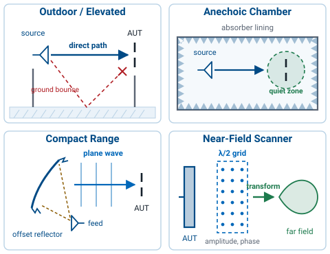
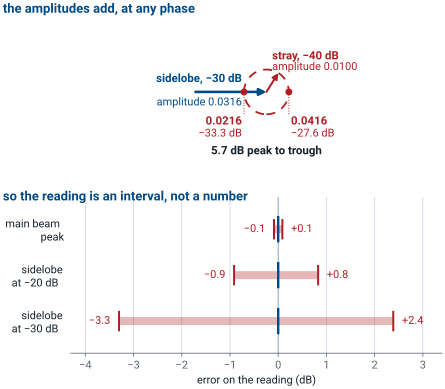
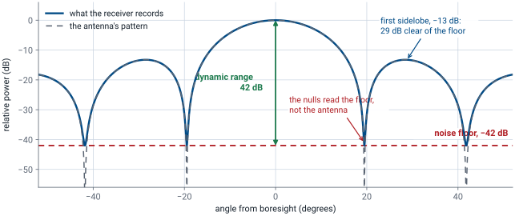
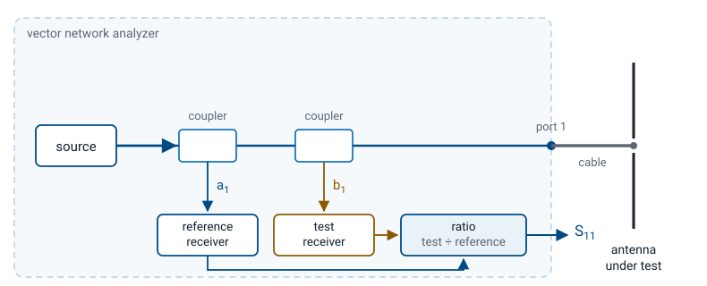
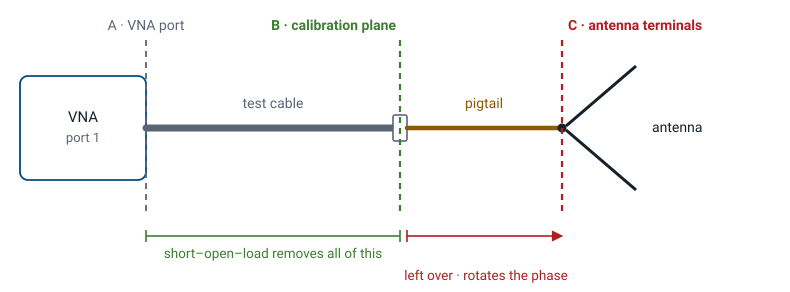
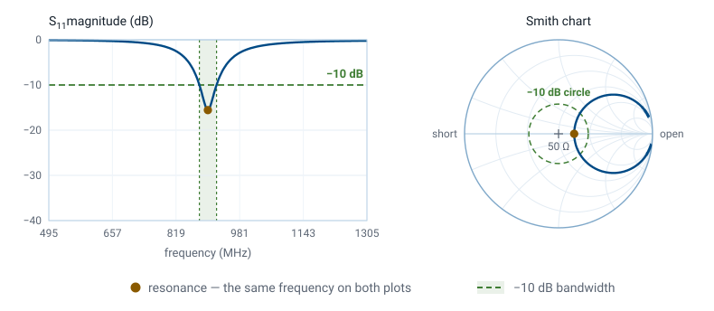
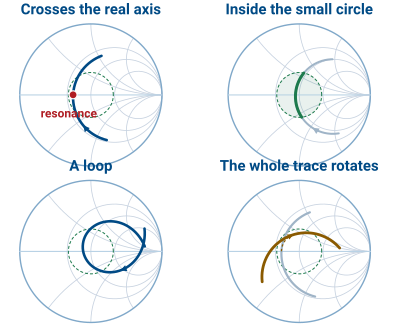

L9 - Measurement Theory#
Measurement Theory
A range is a plane-wave simulator, and a VNA measures one number.
Lesson 9 · Antennas, Phased Arrays, and Radar Systems · Dr. Neil Rogers
Slides
Learning Objectives
- I can state what a valid pattern measurement requires — plane-wave illumination across the antenna under test — and turn that requirement into a minimum range length.
- I can describe the far-field range types — outdoor, anechoic chamber, and compact range — and explain what absorber reflectivity and quiet-zone specifications actually control.
- I can explain how near-field scanning plus a transform substitutes for an impossibly long range, and why that transform is the same Fourier relationship that produced the pattern in the first place.
- I can measure gain by the comparison method against a standard gain horn, define the standard pattern cuts and polarization measurements, and state the conditions under which each is valid.
Lessons 7 and 8 gave you an antenna and a model of it. Every pattern in this course so far came out of an integral; none of them came off an instrument. This lesson is the theory that the next two lab periods stand on, and it runs the whole problem backwards: instead of computing a far field, you have to build one, and every rule that follows is a tolerance on how well you built it.
Learning Objectives, continued
- I can explain what a vector network analyzer measures — the ratio of the returning wave to the outgoing wave — and translate that ratio into reflection coefficient, impedance, return loss, and VSWR.
- I can explain what a short-open-load calibration removes, why the reference plane decides what the numbers mean, and what a one-port measurement can never tell me.
- I can state how a receiver's noise floor bounds every quantity extracted from a measured pattern.
Two of those objectives belong to the radiated side of the antenna and two to its terminals, and the lesson treats them as one subject on purpose. They are the same question asked at two ports: how much of what an instrument reports is the antenna, and how much is the setup around it. You will answer the terminal half on a network analyzer in Lesson 10 and the radiated half on the range in Lesson 11.
Two Measurements, One Question
The pattern: turn the antenna in a plane wave. Lesson 11.
The terminals: sweep \(S_{11}\) on a network analyzer. Lesson 10.
Nobody sells plane waves. A range simulates one, and its specifications are tolerances on that wave.
An antenna measurement is two measurements, and this lesson is the theory behind both. The radiated half asks what the antenna does in every direction, and it runs on a range. The terminal half asks how much of the power you deliver actually gets in, and it runs on a vector network analyzer. The question underneath them is the same: how much of what the instrument reports is the antenna, and how much is the setup around it.
Take the pattern first. Point a plane wave at the antenna from direction \((\theta,\phi)\), record what comes out of the terminals, and repeat for every direction. Reciprocity says the receive pattern equals the transmit pattern, so we may run the measurement in whichever direction is convenient — and everyone runs it in receive, because it is easier to move a receiver than a transmitter. That is also why the antenna under test is the end that rotates in Lesson 11: you would rather not run transmit power through a rotary joint.
The catch is the wave itself. What you can buy is a source antenna at a finite distance, and a finite distance means curvature.
Two Tolerances, Not One
Amplitude taper comes from the source antenna’s pattern.
Phase curvature comes from geometry, and sets the range length.
A range source is a modest-gain horn on purpose: its beamwidth must be three to four times the angle the AUT subtends.
A plane wave is flat in amplitude and flat in phase across the aperture, and a real range violates both. Keeping the two apart matters because the fixes are unrelated: amplitude taper is cured by choosing a different source antenna, and phase curvature only by moving the source farther away or abandoning the far-field range altogether.
The usual amplitude specification is under \(0.25\ \text{dB}\) of taper edge to edge. Seen from the source, the AUT subtends roughly \(D/r\). If the source pattern rolls off across that angle, the AUT is illuminated more strongly in the middle than at the edges, and an unintended amplitude taper is an amplitude taper all the same. Lesson 24 shows exactly what one does to a pattern: it broadens the main beam and lowers the sidelobes. Measure through a tapered illumination and you report an antenna better behaved than the one on the positioner.
Where 2D²/λ Comes From
The \(\pi/8\) is a decision, not a derivation.
A \(0.5\ \text{m}\) dish at \(10\ \text{GHz}\) needs a 55-foot room.
A \(3\ \text{m}\) terminal at \(30\ \text{GHz}\) needs \(1800\ \text{m}\).
Take a source a distance \(r\) away on boresight. The path to a point \(x\) off the aperture center is \(\sqrt{r^2 + x^2} \approx r + x^2/2r\), so the extra path at the edge, where \(x = D/2\), is \(\Delta\ell\) above. Multiply by \(k = 2\pi/\lambda\) to turn path into phase, then allow the edge to lag the center by at most an eighth of a wavelength. The criterion you have quoted since Lesson 5 is \(22.5^\circ\) of edge phase error, written as a distance, and every other far-field number in this course descends from that one tolerance.
Nobody builds a 1.8 km anechoic chamber, and that is the reason compact ranges and near-field scanners exist. The first number is not exotic either: seventeen meters is an ordinary requirement for an ordinary antenna, and it is already a large and expensive room.
The arithmetic, in full. For the reflector, \(\lambda = c/f = 0.03\ \text{m}\) and \(D/\lambda = 16.7\), so
For the satellite terminal at \(30\ \text{GHz}\), \(\lambda = 0.01\ \text{m}\) and
The \(2D^2/\lambda\) criterion assumes \(D\) is comfortably larger than \(\lambda\). For a small antenna — a dipole, a patch — the far field is set instead by the \(r \gg \lambda\) condition from Lesson 5, usually taken as \(r \ge 10\lambda\). Use whichever distance is larger. Lesson 11’s bench range is exactly this case, and there the binding criterion turns out to be neither of them.
A Short Range Is a Defocused Lens
Suppose you build the range too short anyway. The quadratic phase error \(\Delta\phi(x) = \pi x^2 / \lambda r\) rides on the aperture illumination, and the measured pattern is the same radiation integral from Lesson 6 with that extra phase inside it:
A quadratic phase across an aperture is a defocus, exactly like a lens at the wrong distance. What matters is not that the pattern degrades but which features degrade, and in what order.
The Nulls Fill First
Slide the range in and watch. The left panel shows the phase error across the aperture against the \(22.5^\circ\) tolerance line; the right panel overlays the true far-field pattern (dashed) on what the range actually measures (solid). Notice that the nulls fill and the first sidelobe merges into a shoulder long before the main beam does anything at all — and that everything snaps clean right around \(r = 2D^2/\lambda\), where the edge error reads exactly \(22.5^\circ\).
What 2D²/λ Actually Delivers
\(r \div 2D^2/\lambda\) |
Edge error |
Null fills to |
HPBW error |
|---|---|---|---|
2 |
\(11.3^\circ\) |
\(-28\) dB |
none |
1 |
\(22.5^\circ\) |
\(-22\) dB |
\(+0.3\%\) |
1/2 |
\(45^\circ\) |
\(-16\) dB |
\(+1.3\%\) |
1/4 |
\(90^\circ\) |
\(-9.5\) dB |
\(+6\%\) |
This is a main-beam and gain criterion, not a sidelobe one.
Read the top two rows carefully, because they state what the rule delivers. At \(r = 2D^2/\lambda\) you have not measured the true pattern. You have measured one whose first sidelobe reads \(-12.9\) dB instead of the textbook \(-13.3\) dB and whose nulls are twenty decibels shallow. What you have measured correctly is the main beam, the beamwidth, and the gain. If you need a \(-40\) dB sidelobe or a null depth you can defend, go to \(5D^2/\lambda\) or further, or stop using a far-field range altogether.
This failure mode is dangerous because it is quiet. A pattern measured at a quarter of the far-field distance still looks like a pattern: about the right main-beam width, sidelobes present, smooth. It is wrong only in the places you care about most.
Four Ways to Make the Plane Wave

Outdoor: brute distance.
Anechoic: distance plus absorber.
Compact: a reflector collimates.
Near-field: a transform, not distance.
The first three are far-field ranges: they physically deliver an approximate plane wave to the AUT, so all three still owe the full \(2D^2/\lambda\) or the optics that stand in for it. The fourth changes the question entirely.
One thing holds each of them back, and the four have nothing to do with one another. Weather and the ground bounce limit an outdoor range. Absorber reflectivity limits a chamber, which is what the next two frames are about. Diffraction off the reflector’s rim and feed spillover limit a compact range. Phase stability, the probe, and the hours the scan takes limit a near-field measurement.
Distance is free outdoors, so the oldest ranges are two towers, or a tower and a hillside. Two variants matter. An elevated range, the one drawn above, puts both antennas high enough and uses a directive enough source that the specular ground bounce passes under the AUT. A ground-reflection range does the opposite: it chooses the geometry so the direct and ground-reflected rays arrive in phase at the AUT, deliberately using the ground as part of the illumination. Both approaches work. Neither offers security, weather protection, or freedom from interference, which is why most modern measurement happens indoors.
Choosing a Range
Range |
Choose it when |
|---|---|
Outdoor |
The antenna is too big for a room |
Anechoic |
\(2D^2/\lambda\) fits indoors |
Compact |
It does not |
Near-field |
Nulls and low sidelobes |
A far-field range fills nulls in, so a \(-40\) dB sidelobe is near-field work.
Compute \(2D^2/\lambda\) first, because it decides the rest. A meter-class antenna at a few gigahertz needs tens of meters, which is an ordinary chamber and where most work belongs: the room is shielded, the schedule does not depend on the weather, and the quiet zone is a specified, measured number. An antenna too large for any room you can afford goes outdoors, where the distance is free and everything else is not.
When the far-field distance is out of reach, there are two ways out and they suit different antennas. A compact range keeps the measurement in the time domain you are used to — turn the antenna, record the pattern — and suits a directive antenna whose quiet-zone requirement is a meter or two, because the reflector has to be roughly twice that. A near-field scan handles anything, including a low-gain antenna that needs full spherical coverage, and it is the only option when the sidelobes and nulls have to be right, since it never approximates the plane wave in the first place. What it costs is time and complexity: hours to days of scanning, a probe that has to be characterized, and phase stability throughout.
What the Absorber Does
Pyramids give a gradual transition into a lossy medium.
Good absorber reaches \(-40\) to \(-50\) dB at normal incidence.
It degrades at grazing incidence — the side walls.
A chamber is never “no reflections”. It is reflections below a stated level.
Absorber is carbon-loaded foam, cut into pyramids, and it is specified by reflectivity in dB. Performance scales with pyramid height in wavelengths, so low-frequency absorber gets enormous: a chamber rated to 200 MHz has meter-long spikes on the walls.
Which reflectivity level you need is set by the lowest signal you intend to believe, not by the main beam. A reflection 40 dB below the main beam is nothing next to the main beam and a great deal next to a sidelobe thirty decibels down, because both levels are referenced to the same peak.
The arithmetic, for a reader who wants it. Work in amplitudes, because amplitudes are what add. A stray 40 dB below the peak has amplitude \(s = 10^{-40/20} = 0.0100\), and a sidelobe 30 dB below the peak has amplitude \(a = 10^{-30/20} = 0.0316\), so \(s/a = 0.316\): the stray is a third of the sidelobe, 10 dB below it rather than 40. As the positioner turns, the geometry runs the stray’s phase through every value and the two add as vectors, so the reading sweeps from \(a - s\) to \(a + s\):

Against a true level of \(-30\) dB that is \(+2.4\) dB at one extreme and \(-3.3\) dB at the other, 5.7 dB from trough to peak. The pair is asymmetric because the decibel is a logarithm. The same stray moves the main beam by \(\pm 0.09\) dB, which nobody notices.
True level |
Stray is below it by |
Reading runs from |
to |
|---|---|---|---|
Main beam, \(0\) dB |
\(40\) dB |
\(+0.09\) dB |
\(-0.09\) dB |
Sidelobe, \(-20\) dB |
\(20\) dB |
\(+0.83\) dB |
\(-0.92\) dB |
Sidelobe, \(-30\) dB |
\(10\) dB |
\(+2.39\) dB |
\(-3.30\) dB |
Run the argument backwards and it stops being a warning and becomes a measurement. The peak-to-trough ripple of a wanted signal contaminated by a single stray is
so recording the ripple gives \(r\), and \(r\) gives the stray level. That is the free-space VSWR probe sweep the next frame describes.
The Quiet Zone
The deliverable of a chamber is the quiet zone, not the room.
Quoted as a size, a level, and a band: “1.2 m at \(-45\) dB, 2 to 18 GHz”.
The AUT must fit inside it.
The quiet zone is a specified volume, usually a sphere or cylinder centered on the positioner, inside which the stray field is guaranteed below the reflectivity spec. It is measured rather than assumed, typically by dragging a probe through the volume and recording the ripple.
An antenna that overhangs the quiet zone is being measured in a room rather than in a chamber, and no amount of care with the rest of the setup recovers that. It is the first thing to check when a chamber measurement disagrees with a simulation for no reason you can name.
The quiet zone is also the specification most often assumed rather than looked up. It is quoted as three things at once — a volume, a level, and a band — and an antenna can sit inside the volume while the measurement runs outside the band. Read all three off the chamber’s documentation, measure the AUT’s largest dimension against the first, and know which one you were working inside before you write down a sidelobe level.
Compact Ranges
A feed at a paraboloid’s focus: every path is one length, so the wave leaves flat.
Optics instead of distance.
The quiet zone is 50 to 60% of the reflector.
Hard rims diffract, so edges are serrated.
This is Lesson 14’s reflector geometry doing a different job. There the collimated wave was aimed at a satellite; here it only has to reach the far side of the chamber. Two costs come with it. A meter of quiet zone needs close to a two-meter reflector, built to a fraction of a wavelength — so the reflector is a precision instrument in its own right. And a hard edge acts as a line source sitting right inside your test volume, which is why the rims are shaped to scatter the edge contribution away from it.
Near-Field Scanning
The 1.8 km range is impossible, so change the measurement.
Sample the complex field a few wavelengths out, then transform.
Lesson 6 proved this. The far field is the Fourier transform of the source, and transforms are invertible.
Put a small probe a few wavelengths in front of the antenna and record amplitude and phase at a grid of points on a surface. Because the field sampled on a surface enclosing the antenna determines the field everywhere outside it, that grid is enough.
Near-field to far-field transformation is not a new physical principle. It is Lesson 6’s relationship run in the other direction, and three practical consequences follow immediately from that fact alone.
Three Rules for a Near-Field Scan
Phase is not optional. Magnitude does not determine a transform.
Sample at \(\lambda/2\) or finer, or it aliases.
Stand off 3 to 5 \(\lambda\) from the aperture.
Scan length \(L\), aperture \(D\), standoff \(d\). Past \(\theta_\text{max}\) the pattern is truncated.
All three are rules for the scan itself, and each one comes straight out of the transform. Phase is why a near-field range is built around a vector network analyzer and phase-stable cables, and why the probe position has to be known to a small fraction of a wavelength. Sampling at \(\lambda/2\) is the same Nyquist argument as Lesson 6’s spatial spectrum: undersample, and the transform produces lobes in the far-field pattern that the antenna does not have.
The third rule is the one with a number attached, and it answers “how far out is far enough” in two parts. The standoff \(d\) is how far the probe sits in front of the aperture, and three to five wavelengths is the usual choice: far enough that the evanescent part of the reactive near field has died away and the probe is not loading the antenna, close enough that the scan plane does not have to be enormous.
The extent \(L\) is the other part, and it is what decides how much of the pattern you get. Energy leaving the aperture edge at angle \(\theta\) lands on the scan plane a distance \(d\tan\theta\) further out, so a plane of length \(L\) captures everything inside the \(\theta_\text{max}\) above and nothing outside it. Past that angle the transform is working from data it does not have, and the pattern it returns is truncated rather than measured. Doubling the angle you want means roughly doubling the plane, which is why a planar scan is quoted with a valid angle beside it and why it says nothing whatever about back lobes.
Worked example. A \(0.6\ \text{m}\) aperture scanned at \(d = 0.15\ \text{m}\) with a \(1.5\ \text{m}\) plane gives
Halve the plane to \(1.0\ \text{m}\) and it falls to \(53.1^\circ\). The pattern outside that cone is not measured, however clean the data inside it looks.
One more step exists in a real near-field system: probe compensation. The probe has its own pattern, and what it records is the true field weighted by that pattern. Dividing it back out is standard, well understood, and firmly beyond this course. Know that it happens; do not derive it.
The Three Scan Surfaces
Scan surface |
Best suited to |
Pattern coverage |
|---|---|---|
Planar |
High-gain, directive antennas |
A forward cone, roughly \(\pm 60^\circ\) |
Cylindrical |
Fan beams, sector antennas |
Full azimuth, limited elevation |
Spherical |
Low-gain antennas, anything |
The complete sphere |
The choice is a trade of time against coverage. A planar scan of a large reflector is a few hours; the spherical scan that would resolve its back lobes is a few days, and for a high-gain antenna those back lobes are usually not the number anyone is paying for.
Gain by Comparison
Record the AUT, swap in a standard gain horn, subtract.
Transmit power, source gain, range, and cable loss are the same in both, so they subtract out.
The horn’s calibrated gain, \(\pm 0.3\) dB, sets the uncertainty on the answer.
Write Friis for each measurement and the algebra is immediate: every term but the two gains appears identically in both, so the difference of the two received powers is the difference of the two gains. This is the method you will use in Lesson 11 and again for the midterm.
The horn is the largest term in the result and the only absolute number in the setup. Its calibration certificate gives gain against frequency, usually good to two or three tenths of a decibel, and that uncertainty passes straight through to \(G_\text{AUT}\) — there is no averaging it away, so measure at the frequency the certificate lists and interpolate carefully between listed points.
What the subtraction removes is narrower than “everything we do not know”. It removes the terms that are identical in the two measurements: transmit power, source gain, range, cable loss, and the room. Anything that changes between them stays in the answer. A cable bumped during the swap, a mount that does not put the two antennas in the same place, a polarization alignment redone by eye — each of those is a real gain error, and each is why Lesson 11 has you record the horn and the AUT back to back without touching anything else.
None of this is an argument for leaving the setup uncharacterized. The three-antenna method on the next page measures absolute gain with no calibrated antenna at all, and that is how the horn’s own certificate was produced. The absolute number matters because a link budget needs it: a \(3\ \text{dB}\) gain error is a factor of two in received power and a factor of \(\sqrt{2}\) in range.
Worked example. At \(9.4\ \text{GHz}\), a standard gain horn with a calibrated gain of \(16.8\ \text{dBi}\) receives \(-38.6\ \text{dBm}\). Replacing it with the AUT, everything else untouched, gives \(-33.1\ \text{dBm}\).
The AUT collects 5.5 dB more power than the standard, so it has 5.5 dB more gain. That is the entire method.
The conditions on validity are worth naming, because violating one silently biases the answer: same position, same polarization, same frequency, and both antennas either well matched or their mismatch losses corrected. If the AUT has a poor match, the power you measure is low for a reason that has nothing to do with gain — which is precisely why Lesson 10 comes before Lesson 11.
When No Standard Exists
Working from Friis with no calibrated antenna at all, two identical antennas give \(G_t = G_r = G\), so one measurement is enough. If the antennas are not identical, use three and measure all three pairs. Let \(M_{AB}\) be the measured pair sum with the path term already removed, so \(M_{AB} = G_A + G_B\), and likewise for the other two. Three equations, three unknowns:
The standard gain horn itself had to be calibrated somehow, and this is how. No calibrated antenna appears anywhere in the three-antenna procedure, which is what makes it the primary standard rather than a convenience.
Worked example, two identical horns facing each other at \(R = 20\ \text{m}\), at \(6\ \text{GHz}\) so \(\lambda = 0.05\ \text{m}\). With \(P_t = 0\ \text{dBm}\) you measure \(P_r = -40.0\ \text{dBm}\):
Check the range as well: for a horn of this gain, \(D\) is roughly \(0.2\ \text{m}\), so \(2D^2/\lambda = 1.6\ \text{m}\). Twenty meters is comfortably far field. In \(M_{AB} = G_A + G_B\) the path term has already been removed, which is the only bookkeeping the three-antenna version adds.
Cuts, Planes, and Polarization
A great-circle cut holds \(\phi\) and sweeps \(\theta\).
The E-plane contains boresight and the antenna’s polarization; the H-plane is perpendicular.
Aligned is co-pol; rotated \(90^\circ\) is cross-pol. Run both.
Circular polarization has no E-plane. Use axial ratio.
A complete pattern is a function on a sphere, and measuring the whole sphere finely is expensive, so we take slices. A conical cut does the opposite of a great-circle one — holds \(\theta\) fixed and sweeps \(\phi\), tracing a ring at a constant angle off boresight — and is used for tracking antennas and for checking rotational symmetry. Two principal cuts fully describe a well-behaved pencil beam and say nothing at all about the diagonal planes, where the sidelobes of a rectangular aperture frequently sit.
The two principal planes are named for the antenna’s polarization, not for anything about the range. The E-plane is the plane that contains boresight and the direction the antenna’s electric field points: for a vertical dipole it is any vertical plane through the wire, and for a rectangular horn it is the plane through the narrow dimension. The H-plane contains boresight and is perpendicular to the E-plane, which is the same as saying it contains the magnetic field. Fix the polarization and the two planes are fixed with it.
That definition needs the antenna to have one polarization direction, so it applies to a linearly polarized antenna and to nothing else. A circularly polarized antenna has a field that rotates once per RF cycle, so there is no plane holding E, and “E-plane” is meaningless for it. Measure two orthogonal great-circle cuts instead — commonly called the \(\phi = 0^\circ\) and \(\phi = 90^\circ\) cuts, since there is nothing else to name them after — and quote axial ratio against angle in place of a cross-pol pattern.
Cross-pol is the power a linearly polarized antenna radiates into the polarization it is supposed to reject. Measure it by rotating the source antenna \(90^\circ\) about the line of sight and repeating the cut. It is worse off-axis than on, which is why it is quoted as a pattern rather than as a single number, and a well-built linear antenna sits 20 to 30 dB below its co-pol level on boresight.
For a circularly polarized antenna there is a faster method than two cuts. Spin the linear source continuously while sweeping the cut — spinning linear — and the recorded pattern comes back as a band rather than a line. The peak-to-trough width of that band, in dB, is the axial ratio from Lesson 3, and a perfectly circular antenna gives a band of zero width.
How Much of a Pattern Is Real

Two floors: the chamber’s stray field and the receiver’s noise.
Whichever is higher sets your dynamic range, peak minus floor.
A null can never read below it, whatever the antenna does.
A pattern measurement has a floor, and it comes from two places. The chamber contributes one: the absorber’s reflectivity is a stated level, and below it what you record is the room. The receiver contributes the other, its own noise, added in power to everything it records. Whichever is higher is the one you have, and on a good range it is usually the chamber.
Either way the number is the same kind of number, and you measure it rather than assume it. Take the peak, switch the source off, take the floor, and their difference is your dynamic range — 42 dB in the figure above.
Everything above that floor by a comfortable margin is the antenna. The main beam is at the top of the range, the half-power points are 3 dB down, and the first sidelobe of a uniform aperture is 13 dB down, so all three sit 29 dB or more clear of a 42 dB floor and none of them is in question. The nulls are the opposite case. A true null goes to \(-\infty\), the floor does not, and the measured trace simply flattens onto the floor wherever the antenna’s own level drops beneath it. The depth you read at a null is the depth of your receiver, not of your antenna.
That is what “limited by our 42 dB dynamic range” means: the measurement cannot resolve anything more than 42 dB below the peak, so every number extracted from that region is a bound rather than a value. Write the bound. “At least 25 dB deep, limited by our 42 dB dynamic range” is a defensible sentence; “25 dB deep” claims something the instrument never showed you.
This is the payoff of the chamber specifications earlier in the lesson. Absorber reflectivity and the quiet-zone level are a floor quoted to you on paper; the receiver’s noise is a floor you measure on the day. Lesson 11 asks you to measure yours with the source switched off, and then to say, row by row, which of your extracted numbers clears it and by how much.
What a VNA Measures
The rest of the lesson is at the antenna’s terminals.
An antenna is a one-port device: one connector, one wave out, one wave back.
Both subscripts are 1. There is no port 2 in this measurement.

Everything so far measured the antenna from a distance; the rest of this lesson stands at its terminals. There is one connector, one cable, and one complex number per frequency, and that number carries everything we have been predicting on paper since Lesson 4. Lesson 7 told us a half-wave dipole should sit near \(73 + j42.5\ \Omega\) and resonate slightly short of \(\lambda/2\); Lesson 10 is where that prediction meets a real piece of wire.
The block diagram is the whole instrument. A source sweeps frequency, one directional coupler samples the wave going out, a second samples the wave coming back, two receivers record both in magnitude and phase, and the instrument divides one by the other. Because both samples come from the same source, anything the source does wrong — drift, ripple, amplifier gain variation — divides out of that ratio. That is why a pocket NanoVNA and a bench instrument a thousand times more expensive agree on a well-calibrated one-port measurement to within a fraction of a dB.
An antenna has one connector, so it is a one-port device and the diagram has one port in it. The double subscript on \(S_{11}\) is the general scattering-parameter convention, in which \(S_{mn}\) is the wave leaving port \(m\) for a wave incident on port \(n\); with one port the only entry that exists is \(S_{11}\), and it is the reflection at that port. A two-port measurement — \(S_{21}\), insertion loss, a through standard — belongs to a filter or an amplifier, and to the pair of antennas in Lesson 11, not to the antenna on the bench in Lesson 10.
Four Names for One Number
Quantity |
From \(\Gamma\) |
At VSWR \(= 2\) |
|---|---|---|
\(\vert S_{11}\vert\) (dB) |
\(20\log_{10}\vert\Gamma\vert\) |
\(-9.5\) |
Return loss (dB) |
\(-20\log_{10}\vert\Gamma\vert\) |
\(9.5\) |
VSWR |
\((1 + \vert\Gamma\vert)/(1 - \vert\Gamma\vert)\) |
\(2.00\) |
Power reflected (%) |
\(100\vert\Gamma\vert^2\) |
\(11\) |
All four re-dress one complex number. The course bar is VSWR \(\le 2\), or \(11\%\) of the power reflected.
All four appear on instrument menus, and all four are computed from the single complex number the analyzer measured. Nothing else is being measured. Watch the units, because they are not the same down the column: the first two rows are decibels and differ only in sign, the third is a dimensionless ratio, and the fourth is a percentage of power.
The fourth row is the one to carry into a design conversation. \(\vert\Gamma\vert\) is an amplitude ratio, so the fraction of power reflected is \(\vert\Gamma\vert^2\), which at the course bar is 11%.
The course bar is VSWR \(\le 2\), from Lesson 4, and every bandwidth in this course is quoted against it. Lesson 3 is where that rule came from: an impedance bandwidth means nothing until you say what bar you measured it at. Say VSWR, every time.
The table above is what you need when somebody else does not. Datasheets and papers quote return loss, \(\vert S_{11}\vert\), and VSWR interchangeably, and all three are the same measurement; convert whatever you are handed back to VSWR before you compare it to anything of ours.
Impedance from the Ratio
\(\vert\Gamma\vert = 0.28\) is VSWR \(1.78\): it clears the VSWR \(\le 2\) bar.
\(R = 31\ \Omega\), against the \(\approx 70\ \Omega\) a resonant dipole shows.
\(X = -12\ \Omega\) is capacitive, so the element is short. Trim it longer.
\(\Gamma\) and \(Z_L\) carry the same information, and the formula above converts one to the other. The analyzer measures \(\Gamma\) and displays \(Z_L\), which is convenient, because \(\Gamma\) tells you whether the antenna is acceptable and \(Z_L\) tells you what to do about it.
Take the marker reading above one line at a time. The magnitude, \(\vert\Gamma\vert = 0.28\), is a VSWR of \(1.78\), so this antenna clears the VSWR \(\le 2\) bar of the previous frame; on that number alone we would ship it. The real part of the impedance, \(31\ \Omega\), is well under the \(70\ \Omega\) or so a resonant dipole shows, which says some of the power reaching the antenna is going somewhere other than radiation — a lossy balun, a nearby conductor, or a poor ground. And the reactance is negative, \(-12\ \Omega\), which is the actionable part.
A negative reactance is capacitive, and a dipole is capacitive below its resonance and inductive above it. Reading \(X < 0\) therefore means resonance sits above the frequency we are looking at, and the element is electrically short. Lengthening it moves resonance down toward the marker. That inference — sign of \(X\), then which way to trim — is most of what Lesson 10 asks you to do at the bench.
The arithmetic in full. Rectangular form first:
Magnitude quantities come straight off \(\vert\Gamma\vert = 0.28\):
\(\text{VSWR} = \frac{1.28}{0.72} = 1.78, \qquad \vert S_{11}\vert = 20\log_{10}(0.28) = -11.1\ \text{dB}\)$
Then the impedance:
The same conversion is worth running on the textbook numbers. A perfect half-wave dipole at \(73 + j42.5\ \Omega\) gives \(\vert\Gamma\vert = 0.371\), a VSWR of \(2.18\) — it fails. Shorten it to resonance, where it settles near \(70\ \Omega\) real, and VSWR drops to \(1.40\). That \(42.5\ \Omega\) of reactance is the entire difference between a marginal antenna and a good one, and it is why nobody builds a dipole exactly \(\lambda/2\) long.
Calibration: Three Error Terms, Three Standards
Three unknowns — directivity, source match, tracking — need three knowns.
Short, open, and load at every frequency is a SOL calibration.
Standard |
\(\Gamma\) |
Pins down |
|---|---|---|
Short |
\(-1\) |
one extreme |
Open |
\(+1\) |
the other |
Load |
\(0\) |
the floor |
Calibration is what this frame is about, and it is the first thing you do at the analyzer in Lesson 10. Three error terms dominate a one-port measurement. Directivity is the coupler leaking a little of the outgoing wave into the receiver that is supposed to see only the returning one, so the VNA reads a reflection even from a perfect load. Source match is the test port not being exactly \(50\ \Omega\), so energy the antenna sends back is partly re-reflected at the port and sent to the antenna again. Tracking is the reference path and the test path having different gain and different phase, both varying with frequency.
Three unknowns need three knowns, and that is all a short-open-load calibration is. You measure all three, the instrument solves three equations at every point in the sweep, and from then on it subtracts its own error before showing you anything. Two-port work adds a through standard — hence SOLT — but a one-port antenna measurement needs only the three.
The Reference Plane

Calibration teaches the instrument where zero is, and zero is wherever you attached the standards.
Calibration does not make the instrument more accurate. The plane where you attached the standards becomes the plane where \(S_{11} = 0\) means “perfectly matched”, and everything on the far side of it is part of your device under test whether you meant it to be or not.
The Pigtail Problem
10 cm of RG-58 at 915 MHz rotates the trace \(333^\circ\).
Loss is negligible, so the dB plot still looks right.
Fix 1: calibrate to the antenna connector.
Fix 2: port extension applies that exponential. Phase only.
With \(\lambda_g = c\ v_f / f\), that pigtail is \(0.46\lambda_g\) long — nearly a full rotation of the Smith chart, and the impedance read off it is not the antenna’s in any useful sense. The wave traverses the extra length twice, out and back, which is where the factor of two comes from.
The equation above is the whole correction, and it is worth seeing rather than taking on faith. A lossless line of length \(\ell\) multiplies a wave by \(e^{-j\beta\ell}\) on the way out and again on the way back, so the reflection seen at the near end is the reflection at the far end times \(e^{-j2\beta\ell}\):
The magnitude of that factor is 1, so \(\vert S_{11}\vert\) is untouched and the dB plot looks correct while the impedance is wrong. Multiply by the inverse, \(e^{+j2\beta\ell}\), and the antenna’s own \(\Gamma\) comes back. Port extension is the instrument doing exactly that multiplication: you tell it \(\ell\) (or let it find \(\ell\) from an open), and it rotates every point in the sweep by \(2\beta\ell\). Because the correction is a unit-magnitude phase term, it cannot undo loss and it cannot undo a real mismatch inside an adapter — those need the cal plane moved instead, which is Fix 1.
At 990 MHz that same pigtail is exactly a half guided wavelength, \(2\beta\ell\) is a full \(720^\circ\), and the impedance repeats — the one frequency where the uncorrected reading happens to be right, and a good illustration of why “it looked fine at one marker” is not a check.
Always verify a calibration before you trust it. Reconnect the load standard and look: \(\vert S_{11}\vert\) should sit below \(-30\) dB across the whole sweep. If it does not, something moved, a connector is loose, or you swapped cables after calibrating. Re-do it. An unverified cal is an unmeasured antenna, and Lesson 10 makes the verification screenshot a deliverable for exactly that reason.
Reading a VNA Sweep

A dip marks a resonance.
The depth says how well matched it is, not how well it radiates.
The width where VSWR \(\le 2\) is the impedance bandwidth.
Quote it in MHz and in percent.
This is what the sweep looks like on the instrument, and it is one measurement drawn twice. \(\vert S_{11}\vert\) against frequency is on the left and the same points are on the Smith chart on the right; the resonance is the dip on one plot and the real-axis crossing on the other, at the same frequency. Lesson 10 has you produce both of these for your own antenna.
Read the bandwidth against VSWR \(\le 2\), which is the bar from Lesson 4 and the one every number in this course is quoted against. The trace above is plotted in decibels, where that bar lands at \(-9.5\) dB; set the analyzer to VSWR format instead and the line is simply 2, which is the display to use in Lesson 10 when you measure your own.
Fractional bandwidth is what lets us compare a 900 MHz antenna to a 2.4 GHz one, and it is the number with a sanity range attached: a thin-wire dipole lands between 3 and 10%. The trace above bottoms out at VSWR \(1.40\) and crosses VSWR 2 at 877 and 924 MHz, so \(\text{BW} = 47\ \text{MHz}\) on \(f_0 = 900\ \text{MHz}\), or 5.2% — entirely believable. If you measure 1%, suspect the setup before the antenna; a resonant length of feed cable can manufacture a narrow dip that has nothing to do with the element.
Four Smith-Chart Reading Skills
Crosses the real axis: resonance. Left of center is \(R < 50\ \Omega\).
Inside the VSWR \(=2\) circle: the match bar, drawn.
A loop: two resonances, often element plus feed.
The whole trace rotating: your reference plane moved.

You met the Smith chart in ECE 343 as a graphical impedance calculator. Today you only need to read one: it is the complex \(\Gamma\) plane with a normalized-impedance grid on top, center \(50\ \Omega\), left edge a short, right edge an open, upper half inductive and lower half capacitive. Those four skills cover almost everything you will see this semester, and you will rehearse them on a widget at the start of Lesson 10 before you read your own trace.
What One Port Cannot Tell You
Solder a \(50\ \Omega\) resistor across the connector: VSWR \(1.00\), marker dead center.
A perfect match. It radiates nothing.
\(S_{11}\) measures mismatch only. Efficiency needs a second, independent measurement.
This cuts both ways on the bench. A deep, wide dip is necessary for a good antenna, not sufficient, and an antenna with a mediocre \(-8\) dB match may still be the better radiator. It is also the reason the two labs come as a pair: Lesson 10 establishes that power went in, and only Lesson 11 establishes that it came back out, and in which direction.
The Environment Is Part of Your Antenna
Perturbation |
What you see |
Why |
|---|---|---|
A hand near it |
\(f_0\) down, dip shallower |
tissue adds loss |
Flat on the bench |
\(f_0\) shifts, a loop |
partial ground plane |
Near a wall |
wiggles around the dip |
energy returns |
Lesson 5 defined the reactive near field as the region where energy is stored rather than radiated. Anything you put in that region becomes part of the antenna, and the analyzer will tell you so immediately. None of this is instrument error. It is a real change in input impedance, and the same physics reappears in Module 3 as mutual impedance between array elements — when you put your hand near a dipole in Lesson 10 you are running a one-element preview of what neighbors in an array do to each other.
Summary — The Far-Field Range
Symbol / idea |
What it is |
The number to remember |
|---|---|---|
\(r \ge 2D^2/\lambda\) |
Minimum far-field range length |
\(22.5^\circ\) of edge phase error, written as a distance |
\(\Delta\phi_{\max} = \pi D^2 / 4\lambda r\) |
Quadratic phase error at the aperture edge |
\(\pi/8\) at the far-field distance |
Amplitude taper |
Source pattern rolling off across the AUT |
Under \(0.25\) dB; source beamwidth 3-4× the subtended angle |
Absorber reflectivity |
The chamber’s floor: how much a wall reflects |
\(-40\) to \(-50\) dB at normal incidence, worse at grazing |
Quiet zone |
Volume where the stray field meets spec |
A size and a level; the AUT must fit inside |
Compact range |
Reflector collimates a spherical wave up close |
Quiet zone \(\approx\) 50-60% of the reflector |
Near-field scan |
Sample amplitude and phase close in, transform |
Half-wavelength sampling; phase is mandatory |
Summary — Gain and the Terminals
Symbol / idea |
What it is |
The number to remember |
|---|---|---|
Comparison method |
Gain by differencing against a standard |
\(G_\text{AUT} = G_\text{SGH} + (P_\text{AUT} - P_\text{SGH})\) |
Three-antenna method |
Gain with no calibrated standard |
\(G_A = \tfrac{1}{2}(M_{AB} + M_{AC} - M_{BC})\) |
\(S_{11} = b_1/a_1\) |
One-port scattering parameter |
equals \(\Gamma\) at the reference plane |
\(Z_L = Z_0(1+\Gamma)/(1-\Gamma)\) |
Impedance from reflection |
sign of \(X\) tells you short (−) or long (+) |
VSWR \(\le 2\) |
The match bar this course quotes, from Lesson 4 |
\(\vert\Gamma\vert \le 1/3\); \(\vert S_{11}\vert \le -9.5\) dB; 11% of the power reflected |
Directivity, source match, tracking |
The three one-port error terms |
three unknowns, hence three SOL standards |
Reference plane |
Where the standards were attached |
line length past it = pure rotation on the chart |
Dynamic range |
Peak level minus measured noise floor |
bounds every extracted number |
The Midterm Project
Build a dipole. Match it twice. Measure its pattern. Due 2 Oct, 2359.
Lessons |
What it uses |
|---|---|
L1-L3 |
Gain, beamwidth, polarization |
L5-L6 |
Far field, the radiation integral |
L7-L8 |
The dipole, computed and modeled |
L9-L11 |
The range and the analyzer |
Everyone builds the same antenna, a dipole, and that is deliberate. The project is not an antenna design exercise — Lesson 7 already gave you the design, Lesson 8 let you model it, and Lessons 10 and 11 put it on the two instruments. Handing the whole class one known antenna means the pattern, the gain, and the impedance are all predictable before anyone measures anything, so the work of the project is the comparison rather than the build. It also means ten independent measurements of the same object, which makes disagreement between them worth talking about.
The table is the point of the project. Lesson 1 defined gain and beamwidth and Lesson 3 defined polarization, so the report quotes all three. Lesson 5 set the far-field boundary and Lesson 6 gave the integral that produces the pattern, so you know what the pattern should look like before you measure it. Lesson 7 solved the dipole in closed form and Lesson 8 modeled it in NEC, so you have two independent predictions to compare against. Today gives the range and the analyzer, and Lessons 10 and 11 are the dress rehearsal on both. Nothing in the course so far is left out of it.
The full requirements are in the project description (PDF).
Practice
Where This Is Going
Lesson 10 puts an antenna on the analyzer: calibrate, sweep, read the match.
Lesson 11 puts one on the positioner: cut two planes, extract gain and beamwidth.
Both lessons are procedure. The reasons are all here.
The next two periods are hands-on and deliberately thin on theory — you will be standing at an instrument, not at the board. Everything you need to justify what you do there has been said today, so bring this lesson with you: the range length you check with a tape in Lesson 11 is the \(2D^2/\lambda\) above, and the reference plane you calibrate at in Lesson 10 is the one drawn on the cal-plane figure.